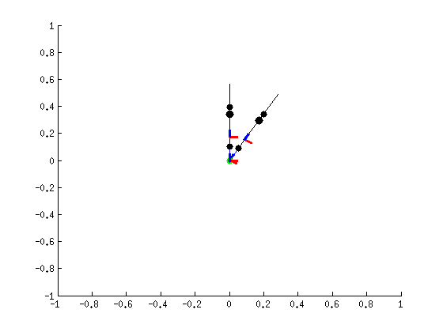
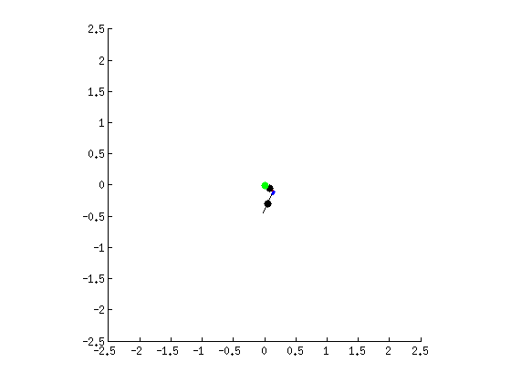

Contents
- dirDynTest1 is an attempt to model an interaction between two bodies:
- Loads the proper libraries and functions
- Clears all previous models
- Defines bodies to be used in dynamic analysis
- Draws figure of initial position
- Calculates dynamics
- Calculates hypotenus of a right trianlge
- Forward dynamics for one phase/ one model
- Exchanges forces at a contact and calculates forward dynamics of second model
- Makes a cute movie of the motion from the results
dirDynTest1 is an attempt to model an interaction between two bodies:
% The first body 'm1' has a contact at the foot and is alowed to fall in % gravity and act as a double pendulum. % % The second body 'm2' has no contact and is influenced by the % gravitational field and the forces of m1. This is acheived in the % following manner: % % The final state of m1 is recorded and used to calculate the forces BY the % body ON the contact to keep it's foot segment stationary (acting as a % pivot), F.. % The forces are then applied to a stationary model with the magnitude of % gravitational field set to 0 and the torques on each joint caused by F % are calculated. % The above mentioned torques are added to the 'initial condition torques' % and the used in 'forward dynamics' to solve the differential equation at % each DegQdotree of Freedom (DOF). % The DOF's are defined at each joint and are: % >> translations in the x and z directions on the foot % >> rotations about the y axis on the foot % and on the 'knee' function directDynTest1
Loads the proper libraries and functions
run('./S2M_Lib/loadS2MLib_pwd.m')
Clears all previous models
try %#ok<TRYNC> S2M_rbdl('delete', m1); S2M_rbdl('delete', m2); S2M_rbdl('delete', n); end clc; clear; close all;
Defines bodies to be used in dynamic analysis
n = S2M_rbdl('new', './twoInteractingBodies.s2mMod'); % One model containing both models. m1 = S2M_rbdl('new', './twoBodiesCont.s2mMod'); % With contact on foot - parent segment foot -(double pendulum) used for "Body One", no forceplates m2 = S2M_rbdl('new', './twoBodiesForces.s2mMod'); % Second Body (free no contacts). mass = S2M_rbdl('totalMass', n); % Caclulates total mass of object for easy estimation of forces (i.e. 9.8 * mass = force of gravity) ndof = S2M_rbdl('ndof', n); % Cacluates number of degrees of freedom, useful if you want intial conditions of zero tau = [0 0 0 0]'; % defines zero torques used in direct dynamics. xinit = [0; 0; pi/6; 0; 0; 0; 0; 0]; % defines initial state for first body
Draws figure of initial position
<< code here is straight forward for those with matlab experience >>
figure
view([0 0])
xlim([-1 1]);
ylim([-1 1]);
zlim([-1 1]);
h = S2M_rbdl_ShowModel(m1,xinit(1:end/2));
hold on
h2 = S2M_rbdl_ShowModel(m2, [0;0;0;0]);
 Calculates dynamics
Xint1 = ode45(@dirDyn, [0 1.38], xinit); % uses forward dynamics to calculate dynamics of first body - second body 'invisible'; does not exist in this step. timeFirst = size(Xint1.y, 2); % stores total number of time steps used to solve ODE in a useable variable Qm1 = (Xint1.y(1:end/2, timeFirst)); % picks out the final position of the first body. Qdotm1 = (Xint1.y(end/2+1:end, timeFirst)); % picks out the final velocity of the first body. xfinal = (Xint1.y(1:end, timeFirst)); % picks out the final state of the first body. Xint2 = ode45(@doubleDyn, [0 0.5], zeros(ndof, 1)); % uses forward dynamics to calculate second phase of motion using final state of first phase as initial conditions % The following will be useful when trying to animate both models at the % same time so that the timing 'looks right' timeSecond = size(Xint2.y, 2); secondHalf = repmat(xfinal, 1, timeSecond); firstHalf = repmat(zeros(ndof/2, 1), 1, timeFirst); XintBodyOne = [Xint1.y(1:end/2, :), secondHalf(1:end/2, :)]; % Position of the first body over the whole motion XintBodyTwo = [firstHalf, Xint2.y(1:end/2, :)]; % Position of the second body over the whole motion XintTotalMotion = [XintBodyOne; XintBodyTwo]; % Fhypot = pythagorous(F(1), F(2)); % calculates total force from components
Calculates hypotenus of a right trianlge
function hypot = pythagorous(xcomp, zcomp) hypot = sqrt(xcomp^2 + zcomp^2); end
Forward dynamics for one phase/ one model
function dx = dirDyn(t,x) Q = x(1:end/2); % Stores position values Qdot = x(end/2+1:end); % Stores velocity values Qddot = S2M_rbdl('forwardDynamics', m1, Q, Qdot, tau, true); %Calculates accelerations of each DOF using RBDL 'forward dynamics'- Documentation can be found online. dx = [Qdot; Qddot]; % Returns velocities and accelerations % in a format useful for ODE 45 end
Exchanges forces at a contact and calculates forward dynamics of second model
function dx2 = doubleDyn(t, x) Q = x(1:end/2); % Stores initial postion Qdot = x(end/2+1:end); % Stores initial velocities [QddotDONOTUSE, F] = S2M_rbdl('forwardDynamics', m1, Qm1, Qdotm1, tau, true); % Calculates final forces exherted on the contact point by body one using final state of m1 S2M_rbdl('gravity', m2, [0 0 0]'); % Sets gravity of m2 to zero taus = S2M_rbdl('inverseDynamics', m2, Q, Qdot,zeros(ndof/2, 1), [0; 0; 0; F(1); 0; F(2)]); % Calculates impact of forces on a stationary m2 in vaccuum S2M_rbdl('gravity', m2, [0 0 -9.81]'); % Sets gravity of m2 back to -9.81 TauProp = tau+taus; % Adds initial value tau to torques created by the forces from m1 Qddot2 = S2M_rbdl('forwardDynamics', m2, Q, Qdot, TauProp); % Calculates accelerations dx2 = [Qdot; Qddot2]; % Returns velocities and accelerations in a format compatible with ODE45 end
Makes a cute movie of the motion from the results
S2M_rbdl_AnimateModel(n, XintTotalMotion);
%S2M_rbdl_AnimateModel(m2, XintBodyTwo);
 end